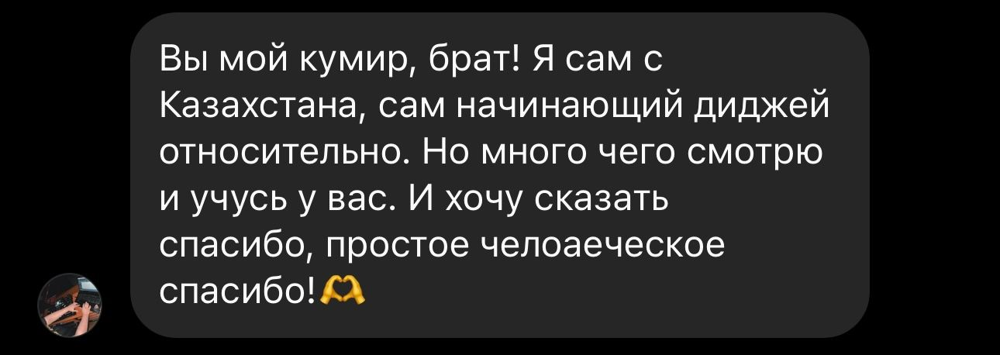
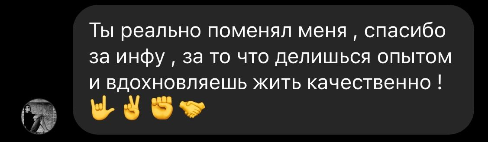
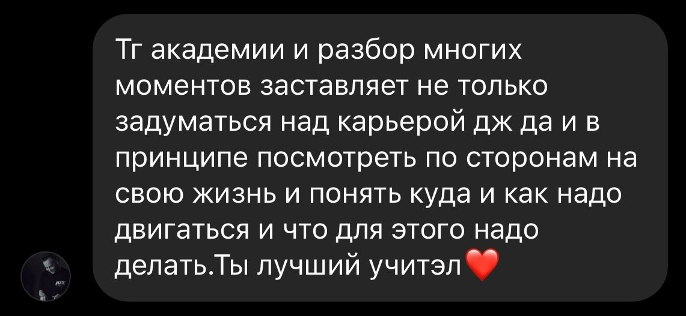
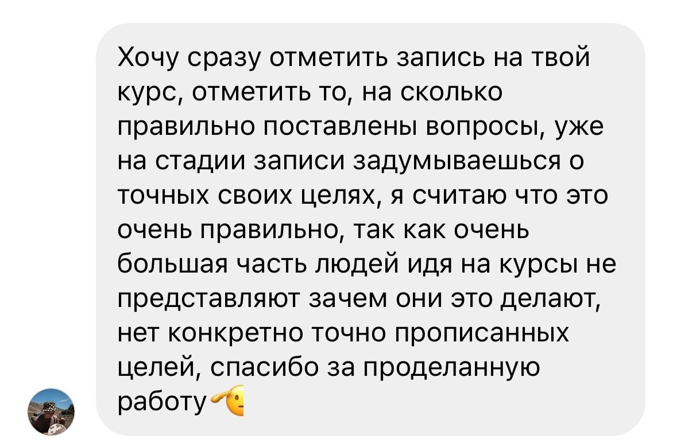

Онлайн-курс
Профессия DJ с нуля
Методология, отточенная за 2 года до идеала, благодаря которой ученики начинают играть уже после первого занятия
Начать обучение
Регистрация на курс:
до 15.08.2026

Кирилл DJ KIDY
МЕЖДУНАРОДНЫЙ DJ & PRODUCER
Тебе подойдет этот курс, если ты:
1
В поисках достойного хобби
2
Ищешь творческую профессию
3
Хочешь переехать за границу
4
Жаждешь стать звездой
5
Желаешь прокачать свои навыки
6
Задумываешься о собственном проекте
Что тебя ждет на онлайн-курсе "Профессия DJ с нуля”
Смотришь уроки онлайн в своём удобном темпе + подключаешься на эфир с DJ KIDY 1 раз в месяц
Выполняешь домашнее задание на своём ноутбуке и контроллере
Общаешься в чате со мной, кураторами и другими учениками курса
Программа курса "Профессия DJ с нуля”
БАЗА диджеинга
Освоишь оборудование Pioneer DJ и AlphaTheta
Научишься сводить так, чтобы миксы звучали цельно, а не как два случайных трека
Разберёшься в Rekordbox и Serato быстрее, чем большинство делает это методом проб и ошибок
Соберёшь свою первую музыкальную библиотеку и запишешь выпускной микс, который не стыдно показать другим DJ или арт-директорам
20.000р
Оплатить "БАЗА диджеинга"Глубокое погружение
Этот курс для тех, кто уже освоил базу и хочет выйти на новый уровень
На этом курсе ты разберёшься в продвинутых возможностях AlphaTheta, Rekordbox и Serato DJ Pro, чтобы использовать оборудование на максимум, а не только базовые функции
Навыки, которые получишь на курсе, пригодятся на любой аппаратуре: в клубе, на вечеринке, при записи сетов или создании контента для соцсетей
40.000р — 30.000р
при покупке "БАЗЫ диджеинга"
вместе с "Глубоким погружением"
+ "Глубокое погружение" Заказать консультацию от DJ KIDY
Отзывы учеников курса


